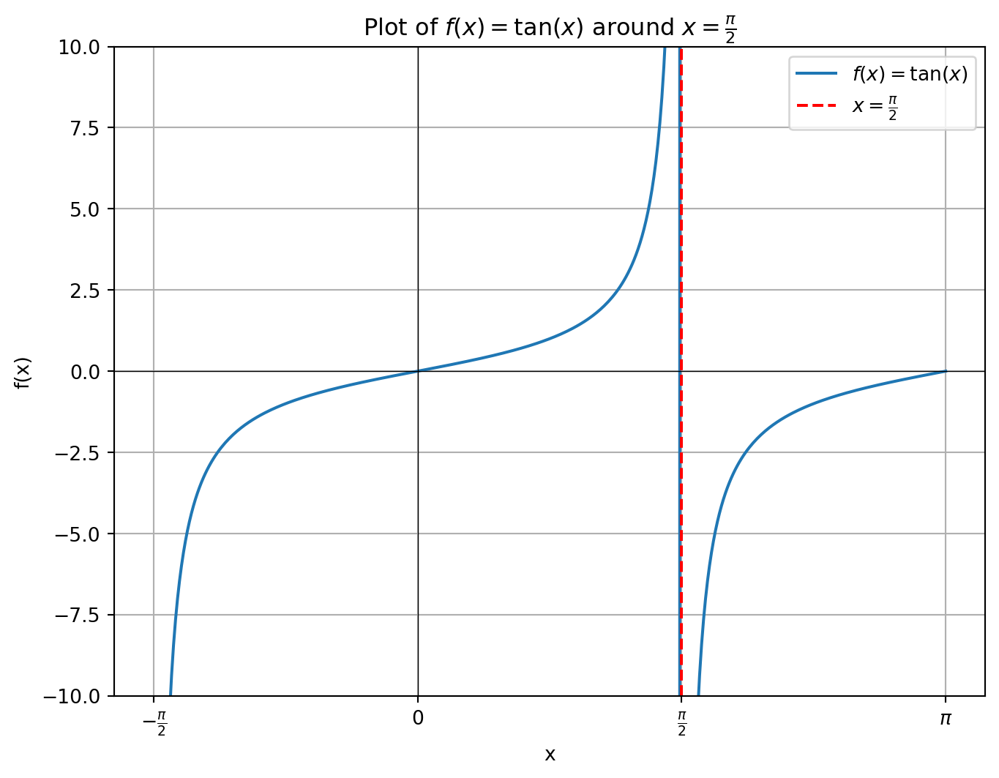
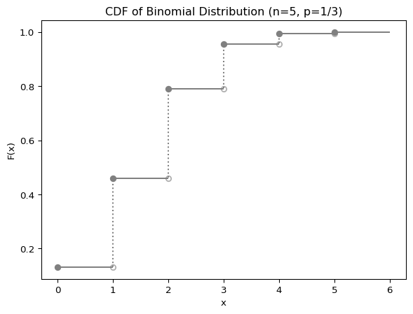
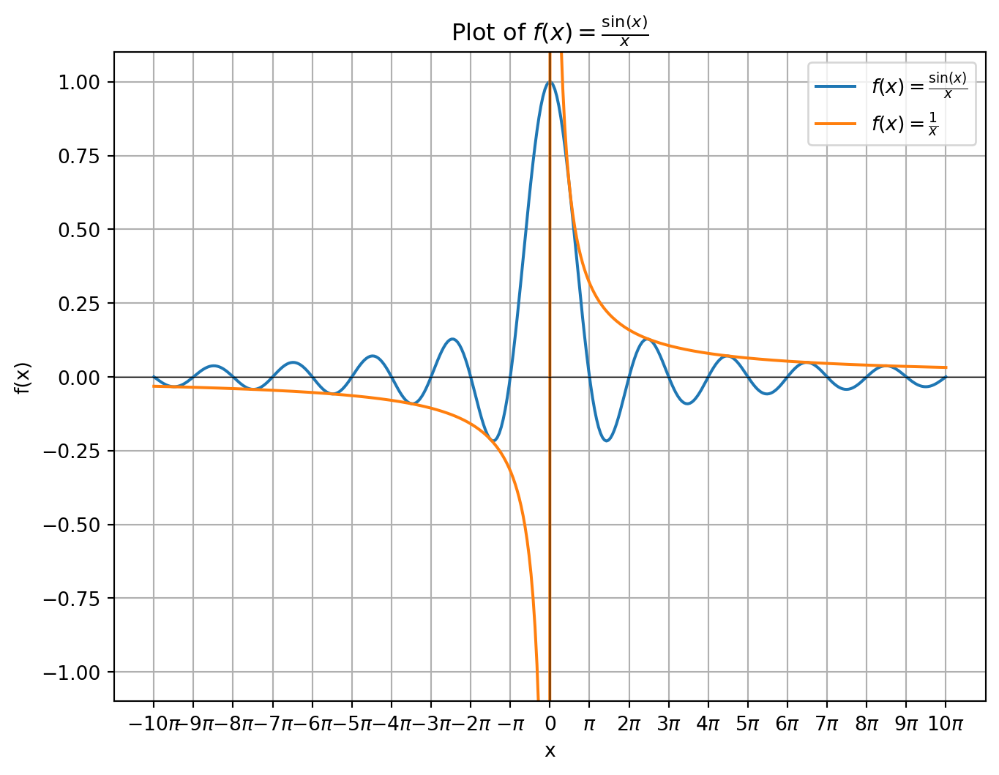

連続関数
変数 \(x\) が限りなく \(a\) に近づくとき，\(f(x)\) も \(f(a)\) に近づくならば，\(f(x)\) は \(x=a\) において連続である，といいます．つまり，
\[ x\to a \text{ ならば } f(x) \to f(a) \]
Def: \(\epsilon\)-\(\delta\) 論法的連続性
任意の \(\epsilon >0\) に対して，ある \(\delta > 0\) が存在して，
\[ \vert x - a \vert < \delta \Rightarrow \vert f(x) - f(a)\vert < \epsilon \]
を満たすとき，\(x=a\) において \(f(x)\) は連続であるという．
Example 1
\(f(x) = \sqrt{x}\) について，\(a > 0\) で連続であることを以下示します．
\[ \begin{align} \vert \sqrt{x} - \sqrt{a} \vert &= \left\vert\frac{(\sqrt{x} - \sqrt{a})(\sqrt{x} + \sqrt{a})}{\sqrt{x}+\sqrt{a}}\right\vert\\ &= \left\vert\frac{x - a}{\sqrt{x}+\sqrt{a}}\right\vert\\ &\leq \left\vert\frac{x - a}{\sqrt{a}}\right\vert \end{align} \]
ここで，\(\vert x - a\vert < \delta(\epsilon) = \epsilon\sqrt{a}\) と定めると
\[ \vert x - a\vert < \delta(\epsilon) \Rightarrow \vert \sqrt{x} - \sqrt{a}\vert < \epsilon \]
Example 2 : 三角関数の連続性
\(x = a + h\) とおくと，和積の公式を用いて
\[ \begin{align} \vert \sin(x) - \sin(a) \vert &= 2\left\vert \cos\frac{x+a}{2}\sin\frac{x-a}{2} \right\vert\\ &= 2\left\vert \cos\left(a + \frac{h}{2}\right)\sin\frac{h}{2} \right\vert\\ &\leq 2\left\vert\frac{h}{2}\right\vert \cdot 1\\ &=\vert h \vert \end{align} \]
\(\cos x = \sin\left(x + \frac{\pi}{2}\right)\) であるので，\(\sin x\) が連続であるならば, \(\cos x\) も連続．
Theorem 1 : 連続関数の定数倍
\(f(x)\) は \(x=a\) で連続であるとします．このとき，定数 \(c\) を用いた \(cf(x)\) も \(x=a\) にて連続となります．
Theorem 2 : 連続関数の和
\(f(x), g(x)\) は \(x=a\) で連続であるとします．このとき，\(f(x) + g(x)\) も \(x=a\) にて連続となります．
Theorem 3 : 連続関数の線型結合
\(f(x), g(x)\) は \(x=a\) で連続であるとします．このとき，定数 \(c_1, c_2\)に対して \(c_1f(x) + c_2g(x)\) も \(x=a\) にて連続となります．
Theorem 4 : 連続関数の積
\(f(x), g(x)\) は \(x=a\) で連続であるとします．このとき，\(f(x)g(x)\) も \(x=a\) にて連続となります．
Theorem 5 連続関数の逆数
\(f(x)\) は \(x=a\) で連続であるとします．このとき，\(f(a)\neq 0\) であるならば \(1/f(x)\) も \(x=a\) にて連続となります．
右連続と左連続
点 \(a\) における極限を考えるとき，
- \(x\) が増大しつつ \(a\) に（左側から）近づく, \(\lim_{x\to a-0}\)
- \(x\) が減少しつつ \(a\) に（右側から）近づく, \(\lim_{x\to a+0}\)
それぞれの場合を分けて取り扱うことがあります．
Example 3
\(f(x) = \tan x\) について，\(x = \pi/2\) における極限を考えてみます．
Code
import numpy as np
import matplotlib.pyplot as plt
import sympy as sy
x = sy.Symbol('x')
f = sy.tan(x)
x_vals = np.linspace(-np.pi/2+1e-6, np.pi, 400)
y_vals = np.tan(x_vals)
plt.figure(figsize=(8, 6))
plt.plot(x_vals, y_vals, label=r'$f(x) = \tan(x)$')
plt.ylim(-10, 10)
plt.xticks([-np.pi/2, 0, np.pi/2, np.pi], [r'$-\frac{\pi}{2}$', '0', r'$\frac{\pi}{2}$', r'$\pi$'])
plt.axvline(np.pi/2, color='r', linestyle='--', label=r'$x = \frac{\pi}{2}$')
plt.axhline(0, color='black',linewidth=0.5)
plt.axvline(0, color='black',linewidth=0.5)
plt.title(r'Plot of $f(x) = \tan(x)$ around $x = \frac{\pi}{2}$')
plt.xlabel('x')
plt.ylabel('f(x)')
plt.legend()
plt.grid(True)
plt.show()上記の図のように，
\[ \begin{align} \lim_{x\to \pi/2+0} \tan x &= -\infty\\ \lim_{x\to \pi/2-0} \tan x &= \infty \end{align} \]
実際に，sympy で確認してみると
# DO NOT USE np.pi
print(f"左極限: {sy.limit(sy.tan(x), x, sy.pi/2, '-')}")
print(f"右極限: {sy.limit(sy.tan(x), x, sy.pi/2, '+')}")左極限: oo
右極限: -oo▶ 右連続と左連続
\[ \begin{align} f(a) &= \alpha\\[5pt] \lim_{x\to a-0} f(x) &= \alpha\\ \lim_{x\to a+0} f(x) &= \beta \neq \alpha \end{align} \]
のとき，\(f(x)\) は \(x = a\) において左連続といいます．
\(f(x)\) が閉区間 \([a, b]\) において定義されているとき，
- \(x=a\) においては右連続
- \(x=b\) においては左連続
であることを意味します．開区間 \((a, b)\) において定義されているとき，\(f(a+0)\) が確定ならば，それを \(f(a)\) として定義域を \([a, b)\) 区間に拡張すると \(f(x)\) は \(x=a\) において右連続になります．
一方，\((0, \infty)\) 区間で定義された関数 \(\displaystyle f(x) = \frac{1}{x}\) は開区間では連続ですが，\(x = 0\) のときは定義されません．このとき，\(f(0) = 0\) として定義域を \([0, \infty)\) に拡張すると，\(x=0\) で連続な関数にはなりませんし，\(f(0)\) をどんな値にしたとしても，\(x=0\) の近傍において, \(f(x)\) はいくらでも大きくなってしまうので，連続な関数にはなりません．
📘 REMARKS
- 開区間 \((a, b)\) で定義された連続な関数が，開区間 \([a, b]\) の連続な関数に拡張できるとは限らない
Example 4 : 右連続関数と累積分布関数
離散確率変数 \(X\sim\operatorname{Bin}(5, 1/3)\) を考えます．離散確率変数の累積分布関数 \(F(x)\) は
\[ F(x) = \operatorname{P}(X \leq x) = \sum_{y\leq x}p(y) \qquad p(y): \text{確率関数} \]
と定義されるので，\(F(x)\) は右側連続となります．実際に
Code
import matplotlib.pyplot as plt
import numpy as np
from scipy.stats import binom
n, p = 5, 1 / 3
x = np.arange(0, 6)
cdf = binom.cdf(x, n, p)
fig, ax = plt.subplots(1, 1)
ax.hlines(cdf, x, x + 1, color="gray")
ax.step(x, cdf, where="post", color="gray", linestyle="dotted")
ax.plot(x, cdf, "o", color="gray")
ax.scatter(x[:-1] + 1, cdf[:-1], marker="$\u25EF$", alpha=0.5, color="gray")
ax.set_xlabel("x")
ax.set_ylabel("F(x)")
ax.set_title("CDF of Binomial Distribution (n=5, p=1/3)")
plt.show()
このとき，確率関数は
\[ p(x) = F(x) - \lim_{x_n\to x-0}F(x_n) \]
とすることで計算することが出来ます．一方，\(F(x) = \operatorname{P}(X < x)\) と定義すると左連続となります．
関数の拡張
\[ f(x) = \frac{\sin x}{x} \]
を考えます．この関数は \(x - 0\) で定義されていないですが
\[ \begin{align} f(x) = \left\{\begin{array}{c} \frac{\sin x}{x} & (x\neq 0)\\ 1 & (x = 0) \end{array}\right. \end{align} \]
と \(x = 0\) で連続かつ微分可能になるように拡張することが出来ます．この拡張された関数を特にsinc関数と呼びます．
Code
import numpy as np
import matplotlib.pyplot as plt
# Define the sinc function
def sinc(x):
return np.sinc(x / np.pi)
def inverse_x(x):
return 1/x
# Generate x values
x_vals = np.linspace(-10*np.pi, 10*np.pi, 400)
y_vals = sinc(x_vals)
# Plot the sinc function
plt.figure(figsize=(8, 6))
plt.plot(x_vals, y_vals, label=r'$f(x) = \frac{\sin(x)}{x}$')
plt.plot(x_vals, inverse_x(x_vals), label=r'$f(x) = \frac{1}{x}$')
plt.xticks(np.arange(-10*np.pi, 11*np.pi, np.pi),
[r'$-10\pi$', r'$-9\pi$', r'$-8\pi$', r'$-7\pi$', r'$-6\pi$', r'$-5\pi$', r'$-4\pi$', r'$-3\pi$', r'$-2\pi$', r'$-\pi$', '0', r'$\pi$', r'$2\pi$', r'$3\pi$', r'$4\pi$', r'$5\pi$', r'$6\pi$', r'$7\pi$', r'$8\pi$', r'$9\pi$', r'$10\pi$'])
plt.axhline(0, color='black',linewidth=0.5)
plt.axvline(0, color='black',linewidth=0.5)
plt.title(r'Plot of $f(x) = \frac{\sin(x)}{x}$')
plt.xlabel('x')
plt.ylabel('f(x)')
plt.ylim(-1.1, 1.1)
plt.legend()
plt.grid(True)
plt.show()
▶ \(x = 0\)における連続性の証明
▶ \(x = 0\)における微分可能性の証明